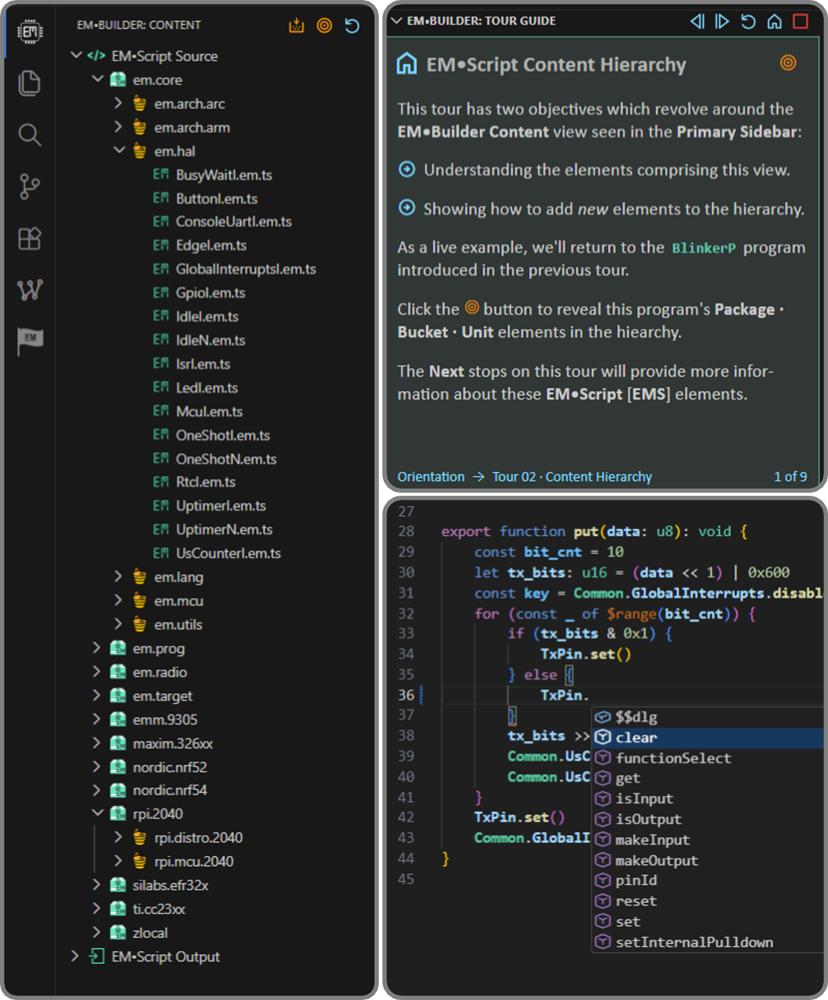

Serving the embedded community
The EM Foundation promotes, sustains, and evolves EM™ programming technology for use by the broader embedded systems community.
Formed as a California public benefit corporation in Oct 2023, we have 501(c)(3) tax-exempt status as determined by the US Internal Revenue Service.
Where every byte and μJoule matters
Resource-constrained embedded systems operate within hard limits on memory, power, and cost.
But embedded SW continually tests those HW limits, as codebases grow larger and more complex.
Under its Tiny Code for Tiny Chips mantra, The EM Foundation works to reverse this SW trend.
EMScript leads
The EMScript language brings higher-level programming to deeply embedded systems without incurring higher levels of run-time overhead.
Using a novel language translator, EMScript specializes SW at build-time to reduce its use of HW resources at run-time.
The EMporium ecosystem
The EMporium provides an EMScript nexus, joining target content and hosted tooling. EMBuilder brings this experience to VS Code.
The EMporium also pairs working EMScript content with EMTours – providing context, structure, and guidance through this rich codescape.

Why we partner
We partner when aligned organizations can extend the reach, credibility, or impact of work that advances The EM Foundation’s mission.
BlueJoule® – collaboration in practice
An open benchmark advanced in collaboration with Novel Bits, BlueJoule scores the energy efficiency of BLE SW across multiple HW platforms.
The EM Foundation brings in its EMScope tooling and EMerald scoring method – turning raw power captures into simple, comparable energy metrics.
The EM Foundation also submits benchmark implementations written in EMScript – enabling side-by-side efficiency comparisons with legacy BLE stacks.
Why we seed
The EM Foundation seeds promising technical work when modest funding can help these efforts get started, move faster, or overcome early barriers.
EMpowerment – a technical kickstarter
The EMpowerment initiative provides lightweight seed funding for university and nonprofit projects focused on energy-efficient embedded systems.
Each project makes substantive use of EMScript while contributing concrete software back into the broader EMporium ecosystem.
Fifty years in embedded systems
I’ve spent nearly fifty years building embedded systems, where tight constraints on HW resources have always shaped the SW.
C taught me the limits
C started as an ideal “medium-level” language – but years of adding SW layers exposed tension between higher-level abstraction and run-time efficiency.
EM became the synthesis
In 2010, those accumulated lessons converged into EM™ – a novel programming model which reconciles higher-level SW with resource-constrained HW.
The Foundation carries it forward
I founded The EM Foundation in 2023 to give this technology a place to keep evolving – and, I hope, a much broader life than I could give it on my own.